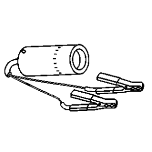
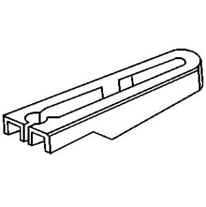
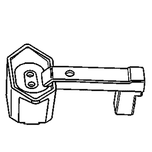
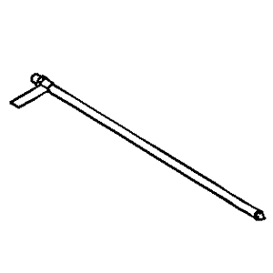
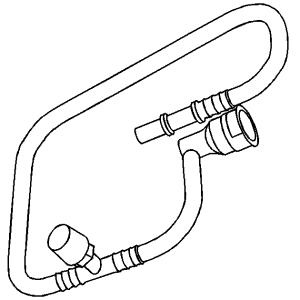
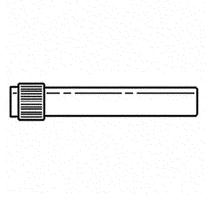
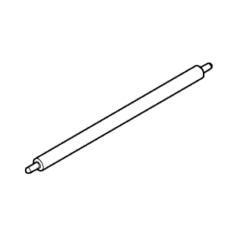

Captiva |
||||||||
|
|
|
|||||||
Ilustración | Nº de herramienta / Descripción |
|---|---|
|
| CH 34730-262 J 34730-262 Adaptador del medidor de prueba de presión de combustible |
|
| CH- 35800-A J- 35800-A Limpiador de inyectores de combustible |

| CH- 38641-C J 38641-B Aparato de verificación de calidad de combustible Diesel |
|
| CH 39021-380 J 39021-380 Adaptador de mazo de cables de los inyectores de combustible |

| CH 39021-450 J 39021-450 Adaptador de mazo de cables de los inyectores de combustible |

| CH- 39194-C Herramienta de desmontaje y montaje de la sonda Lambda |

| CH 41769-1 Separador de conexión rápida de tubería de combustible de 3/8 |

| CH 41769-2 Separador de conexión rápida de tubería de combustible de 5/16 |
|
 | CH 42220 J 42220 Lámpara de detección de fugas universal de 12 voltios |
|
| CH 42242 J 42242 Adaptador del manómetro de combustible |

| CH 42242 Adaptador del tubo flexible de prueba de presión de combustible |

| CH 42960-2 J 42960-2 Herramienta de retención de la tapa del combustible |

| CH 42982 J 42982 Adaptador del manómetro de combustible |
|
 | CH 43178 J 43178 Herramienta de separación de la tubería de combustible |
|
 | CH 44175 J 44175 Aparato de verificación de composición de combustible Brasil - Utilizar equivalente local |

| CH 44581 J 44581 Herramienta de separación de la tubería de combustible |

| CH 44603 J 44603 Lámpara de prueba de inyectores |
|
 | CH 45004 J 45004 Tubo flexible de drenaje del depósito de combustible Brasil - Utilizar equivalente local |

| CH 45722 J 45722 Llave del anillo de bloqueo del emisor de combustible |
|
| CH 45747 J 45747 Llave, unidad de emisión de combustible |
|
| CH 45861 J 45861 Casquillo de sensor de ECT |

| CH 45873 J 45873 Kit de prueba de volumen de retorno de combustible |

| CH 47831 Herramienta de separación de la tubería de combustible |

| CH 47976 Aparato de verificación de la válvula de combustible activa |
|
| CH 47976-60 Adaptador de mazo de cables AFIT |
|
| CH 47976-75 Adaptador de mazo de cables de los inyectores de combustible |

| CH 48027 El manómetro digital Brasil - Utilizar equivalente local |
|
 | CH 48096 Herramienta del puerto de acceso de servicio EVAP |
|
| CH 48482 Llave del anillo de bloqueo del emisor de combustible |

| CH 49290 Adaptador para centrar el bastidor auxiliar del motor |

| CH 50375 Adaptador de presión de tubería de retorno para inyectores diesel |

| CH- 50377-A Tapón de tubería de retorno de inyectores |

| CH 50378 Adaptador de prueba de fugas de retorno de inyectores |

| DT 2619-01 J 2619-01 Martillo de percusión |

| DT 36850 J 36850 Lubricante Transjel |

| EL 26792 J 26792 Aparato de verificación de encendido HEI Brasil - Utilizar equivalente local |
|
| EL 34730-405 J 34730-405 Lámpara de prueba de inyectores |

| EL 39021 J 39021 Aparato de verificación de balance y del solenoide de la válvula de inyección de combustible |
|
| EL 39021-210 J 39021-210 Caja del adaptador del aparato de verificación de la válvula de inyección |
|
| EL 39021-460 Adaptador de prueba para inyector de combustible |

| EL 43244 J 43244 Tenazas extractoras de relés |

| EN- 32 025 012 Adaptador del martillo de percusión |

| EN- 37281-A J 37281-A Herramienta de desmontaje de inyectores |

| EN 37287 J 37287 Adaptadores de corte de la tubería de combustible (Combustible flex) |

| EN- 38522 J 38522 Generador de señal variable |
|
| EN 39313 J 39313 Adaptador de lumbrera de bujía |
|
 | EN- 41413-VLV J 41413-VLV Herraje de la tubuladura del puerto de servicio EVAP Brasil - Utilizar equivalente local |
|
| EN 41769 J 41769 KM J 41769 Conjunto de herramientas de separación de la tubería de combustible |

| EN 43936 J 43936 Caperuza del adaptador de la presión de combustible |

| EN 43937 J 43937 Tuberías del adaptador de la presión de combustible |

| EN 44602 J 44602 Adaptador de prueba de inyectores |
|
| EN 45873-30 J 45873-30 Adaptador de prueba de flujo de inyectores |
|
| EN 46091 J 46091 Aparato de verificación del refrigerador de aire de carga |
|
| EN 46091-5 J 46091-5 Adaptador del aparato de verificación del refrigerador de aire de carga |
|
| EN 46091-15 J 46091-15 Adaptador de prueba de presión del motor |

| EN 46577 Herramienta de desmontaje y montaje de la sonda Lambda |
|
| EN 46594 J 46594 Extractor de inyectores de combustible |

| EN 46786 32 025 013 Herramienta de desmontaje de los inyectores |

| EN 46790 32 025 005 Extractor |
|
| EN 46843 Herramienta de desbloqueo de conexión rápida |

| EN 46999 Herramienta eléctrica de cilindrada personalizada |
|
| EN 47603 Adaptador para medidor de compresión |
|
 | EN 47632 32 025 010 Herramienta de limpieza |
|
| EN 47969 Tubo flexible de diagnóstico de alimentación de combustible |

| EN 48248 Manómetro de compresión de cilindros |

| EN 48266 Herramienta de montaje/calibrador de juntas de inyector |

| EN 48278 Herramienta de desmontaje y montaje del anillo de bloqueo de la bomba de combustible secundaria |
|
| EN 48279 Herramienta de desmontaje y montaje del anillo de bloqueo de la bomba de combustible principal |

| EN 48303 Herramienta de retención de la carcasa del filtro de combustible |
|
| EN 48304 Herramienta de montaje y desmontaje del fijador de filtros de combustible |

| EN 48357 Herramienta de desmontaje de inyectores |
|
| EN 48536 Herramienta de soporte del bastidor (kit de 65 mm para la parte inferior del motor) |
|
| EN 48565 Mazo de cables de prueba de EGR |
|
| EN 48896 Galga de alineación de la instalación de la bomba de combustible HP |
|
| EN 49232 Extractor del anillo de cierre de la bomba de combustible |
|
| EN 49774 Extractor de inyectores de combustible |
|
| EN 49799 Adaptador del manómetro de combustible |
|
| EN 83 95 261 Herramienta para tuberías de combustible |

| GE- 23738-A J 23738-A Bomba de vacío |

| GE- 41413-200 J 41413-200 Aparato de verificación del sistema de emisión de vapores (EEST) Brasil - Utilizar equivalente local |
|
| GE 41413-300A J- 41413-300A Kit de tapones del sistema EVAP Brasil - Utilizar equivalente local |

| GE 41413-SPT J 41413-SPT Luz blanca de alta intensidad Brasil - Utilizar equivalente local |

| GE 41415-40 J 41415-40 Adaptador de la caperuza del depósito de combustible |
|
| GE 41415-50 J 41415-50 Adaptador de la caperuza del depósito de combustible |

| GE 41415-50A Adaptador del tapón del depósito de combusible con rosca interrumpida de 2º diseño |

| J 22610 Tenazas de abrazadera Keystone |
|
| J 24460-A Manómetro del sistema de refrigeración |

| J 25070 Pistola de aire caliente 260-399°C (500-750°F) |
|
| J 34730-375 Lámpara de prueba de inyectores |

| J 36012-A Mazo de cables de diagnóstico del sistema de encendido |
|
| J 38491 Herramienta de extracción de fundas de bujías |

| J 39765 Llave para contratuercas del emisor de combustible |
|
| J 41415-30 Adaptador de la caperuza del depósito de combustible Brasil - Utilizar equivalente local |
|
| J 41515-A Soporte de la bujía |

| J 42598-B Dispositivo de registro de datos del vehículo |
|
| J 43094 Extractor de fundas de bujías |
|
| J 43883 Mazo de cables de diagnóstico del sistema de encendido |
|
| J 44402 Llave de la unidad de emisión del depósito de combustible |

| J 45059 Medidor de ángulos |

| KM 6009 Herramienta de desmontaje y montaje |

| KM 807 Tapones de cierre |
| © Copyright Chevrolet Europe. All rights reserved |